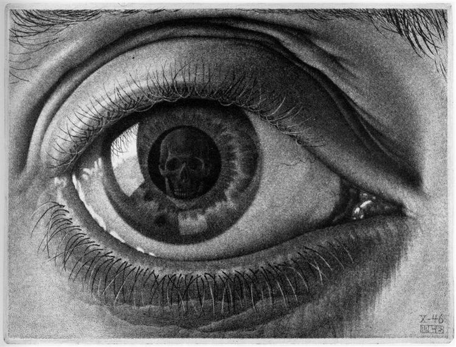
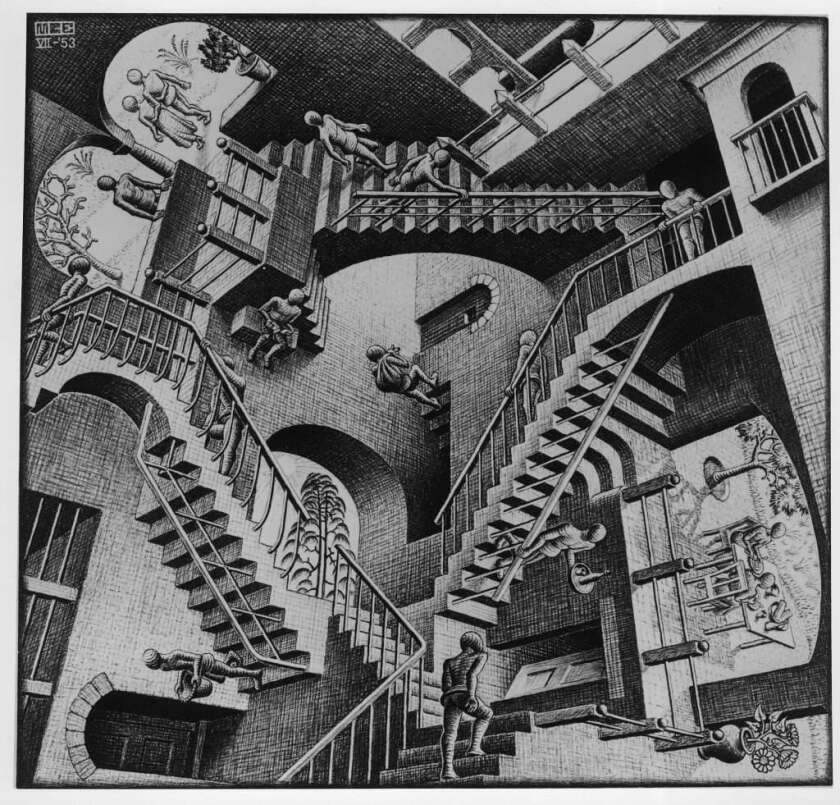
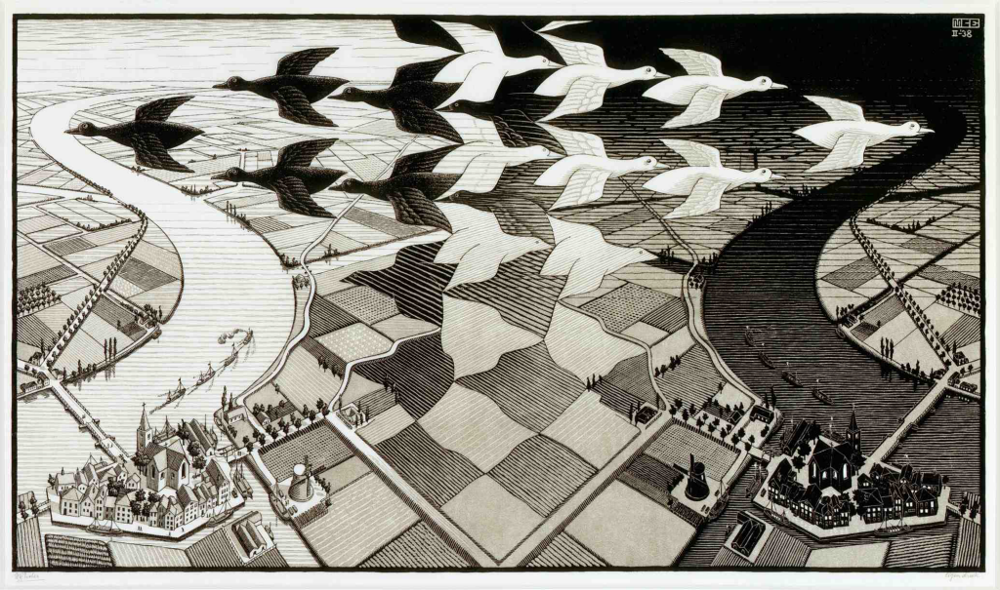
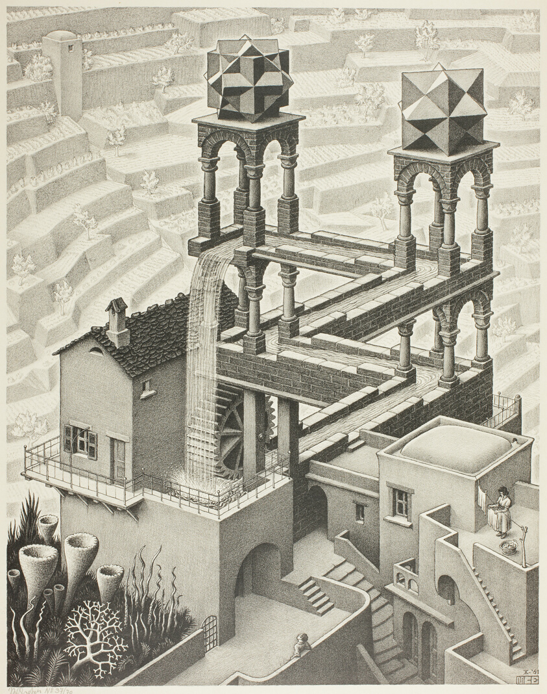
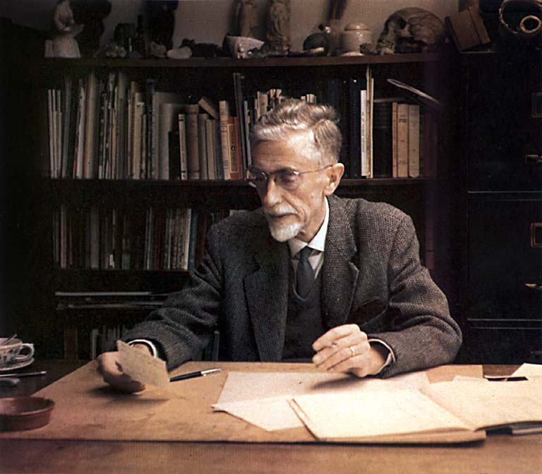
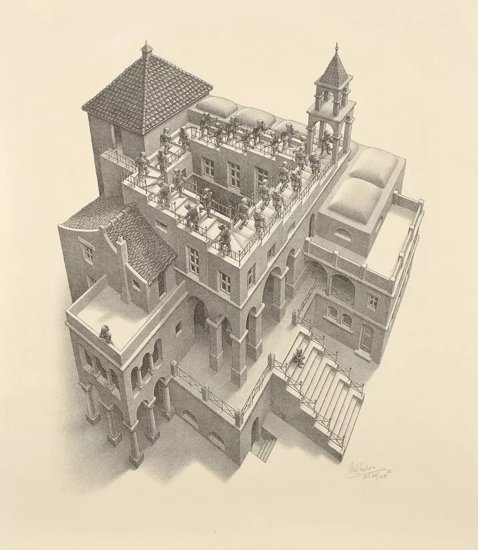
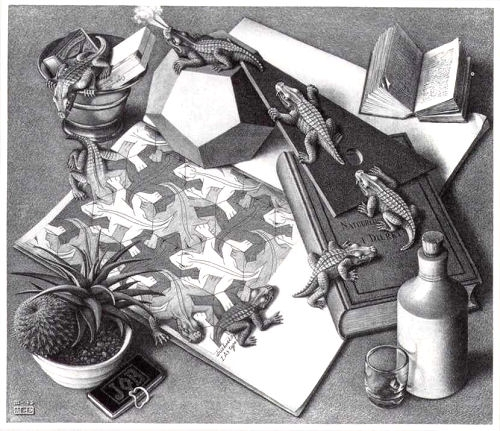
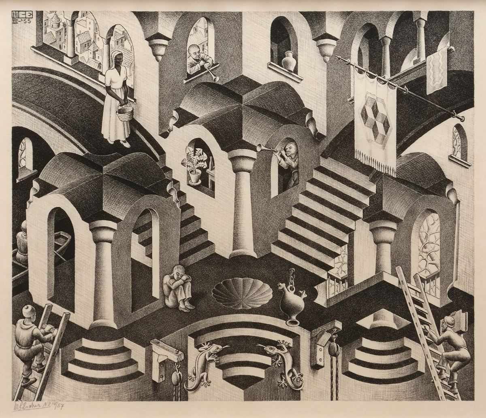
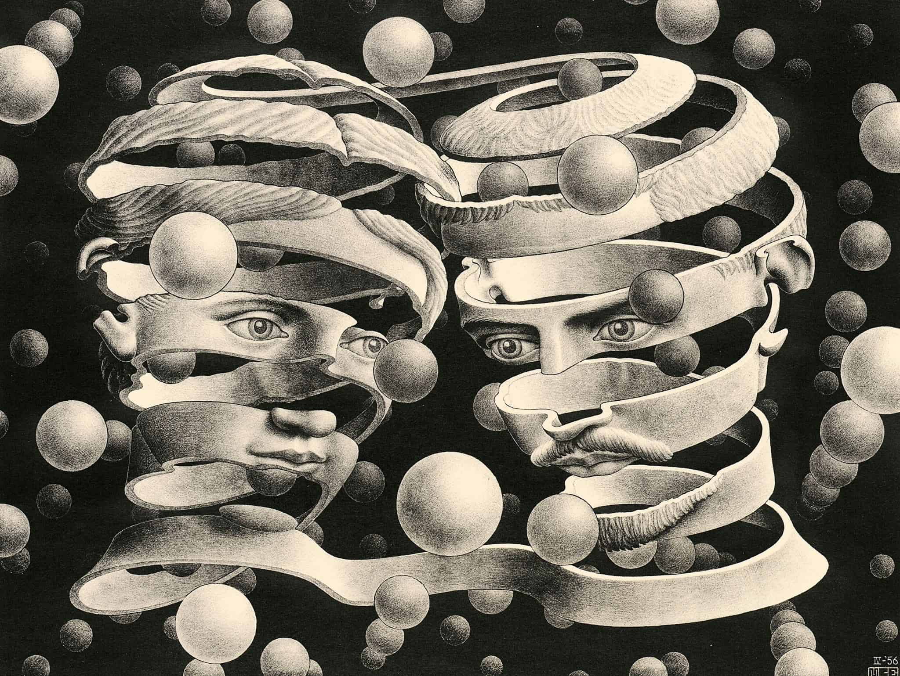

M. C. Escher - Gallery
Home
Media
Gallery
Video
Contact

"Eye" 1946

"Relativity" 1953

"Day and Night" 1938

"Waterfall" 1961

M.C. Escher in 1963

"Ascending and Descending" 1960

"Reptiles" 1943

"Convex and Concave" 1955

"Bond of Union" 1956